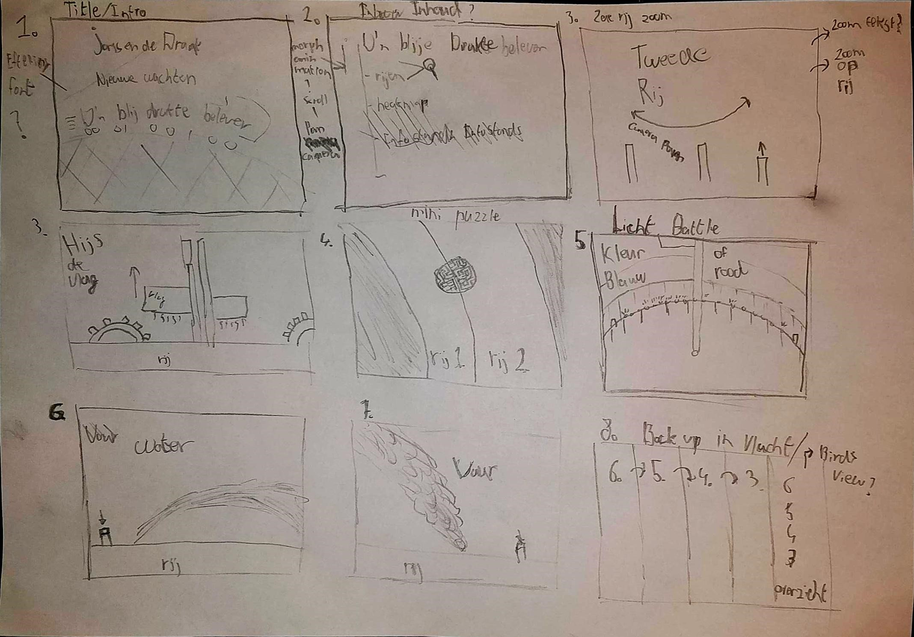
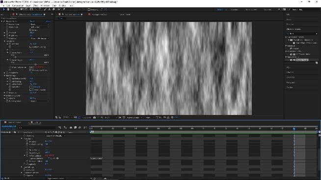
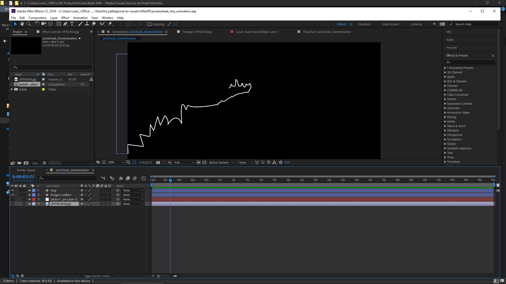

Klanttevredenheid Efteling
Namens Remoticom heb ik gewerkt aan een opdracht voor de Efteling. De vraag luide als volgt: Hoe kunnen we de klanttevredenheid van de Efteling verhogen?
Reflectie
De opdracht heb ik samen met mijn proftaak en profielgroep uitgevoerd. De proftaak groep bestond uit 16 mensen. Dit vond ik de proftaak moeilijker maken. Ik heb niet altijd makkelijk in groepen kunnen werken. Maar deze situatie heeft mij daarom wel in een positie gebracht om mijn zwakke punten te verbeteren. Daarom heb ik mij als groepsleider opgesteld en als contactpersoon naar Remoticom voor de complete groep. Dit betekende dat ik vaker moest overleggen tussen profielgroepen, contact had met Remoticom en mijn groep soms op sleeptouw moest nemen. Dit heeft mij vooral verbeterd als groepsleider. De volgende keer ga ik de afspraken die we van tevoren hebben gemaakt strenger handhaven. Ik merkte dat wanneer de groep afweek van de afspraken ik daar snel in mee ging. Omdat ik niet graag de confrontatie aan wilde gaan. Ik realiseer me nu dat dit het verloop van het project negatief beïnvloed.
Nadat we de opdracht op een correcte manier hadden geïnterpreteerd en dit hadden teruggekoppeld aan de opdrachtgever, ben ik onderzoek gaan doen naar klanten van de Efteling. Omdat de opdracht ging over het verbeteren van de klantentevredenheid wilde ik weten wie de klanten waren en welke negatieve ervaringen ze hadden met de Efteling. Op het internet ben ik gaan zoeken, dit heb ik vastgelegd in het volgende document.
Field Research: EftelingNadat we onderzoek hadden gedaan ben ik begonnen met brainstormen om ideeën te generen. Door het onderzoek waren we het er al snel over eens dat het te maken moest hebben met de beleving van tijd in een wachtrij en het managen van de drukte binnen het pretpark.

Uiteindelijk zijn er meerdere ideeën ontstaan:
- Inernationalisering
- Interactieve Heatmap
- De Virtuele Wachtrij
Het wachtrij-idee heb ik verder uitgedacht. Door af te stappen van het virtuele idee en de wachtrij in het park ook daadwerkelijk te gaan verbeteren worden er meer mensen bereikt. Daarnaast sloot dit beter aan bij het onderzoek. Ik heb goed nagedacht over verschillende uitwerkingen om rijen te verbeteren in de Efteling.
Ook heb ik nagedacht over hoe de Heatmap tot uiting zou moeten komen in het park. Welke uitingen handig zijn en welke vormgeving goed zou zijn in een drukbezocht park zoals de Efteling. Hieronder zie je een Visual van mijn idee.
Ik ben hierna aan de slag gegaan met het uitwerken en visualiseren van het wachtrij idee. Aangezien ik nieuwe technieken wilde gebruiken om een visueel prototype van het concept te maken ben ik begonnen met 4D Cinema. Ik had nog geen ervaring hiermee en heb daarom alle workshops gevolgd en tutorials op Youtube gevolgd.
In de workshop over 4D Cinema ging ik in op het animeren van een 3D omgeving. Daarbij heb ik gekeken hoe de tijdlijn en elementen samenvallen. Daarnaast was het ook belangrijk hoe je de camera door een set kan bewegen en welke instellingen allemaal effect hebben op de render.
Ik heb geleerd hoe je objecten uit het echte leven namaakt. Hier zijn een paar handige tools voor in het programma waardoor je een model naderhand nog goed kan aanpassen en verfijnen. Tot slot heb ik objecten gemaakt in Cinema geplaatst in een shot uit de echte wereld. Bijvoorbeeld in model van een auto in een foto plaatsen waar het perspectief klopt.
De basis van Cinema was voor mij helder. Ik wilde beginnen aan een animatie die het concept voor de Efteling zou uitleggen maar eventueel ook gebruikt kon worden voor promotie. Voordat ik Cinema ging gebruiken ben ik na gaan denken over wat ik in de animatie terug wilde laten komen. Daarmee maakte ik ook voor mijzelf duidelijk welk verhaal ik over wilde brengen op de gebruiker.

Reflectie
Het maken van een animatie heb ik duidelijk overschat. Ten eerste lag mijn focus te dik op Cinema 4D. Ik heb te veel willen doen met dit programma. Waar ik nu achteraf veel beter andere programma’s voor had kunnen gebruiken. Zoals de tekst, belichting, intro en outro. Dit kwam omdat ik geen kennis bezat van de verschillende programma’s en zo nog niet alles op de goede plek kon plaatsen. De volgende keer ga ik ook te werk met kleinere scenes in Cinema 4D die ik los van elkaar render. Dan aan de slag met After Effects om vervolgens met Premiere Pro het geheel aan elkaar de editen. Dit heb ik nu in zekere zin ook wel gedaan, alleen verre van efficiënt.
Mijn eerste versie van de animatie was allesbehalve mooi te noemen. Maar dat was ook niet de bedoeling. Ik wilde een ruw beeld schetsen van hoe het er ongeveer uit moest komen te zien. Om ook vervolgens te testen of het idee goed overkwam op de persoon die aan het kijken was.
Als soundtrack heb ik de thema muziek van Joris en de Draak gekozen. Deze muziek drukt de sfeer goed uit die ik neer wil zetten en is ook herkenbaar voor klanten van de Efteling. Zo hebben ze direct een idee over welke attractie het gaat. Bij de eerste versie heb ik hier niet veel aan gesleuteld.
Bekijk de eerste iteratieDeze versie van de animatie heb ik bij gebruikers getest. Hier wilde ik achter komen of de animatie duidelijk was, de boodschap en het concept duidelijk zichtbaar waren en gedachten van de gebruiker zelf.
Lab Research: Concept testing en testrapportBij het verder uitwerken van de animatie heb ik een nieuwe opzet gemaakt. Hier heb ik me meer gefocust op de ‘events’ in de rij. Zodat deze duidelijk uit de video naar voren zouden komen. Met Technology heb ik samen gekeken naar een opdracht die zei zelf zouden uitwerken. Deze wilde ik toevoegen aan de animatie.
Het begon natuurlijk met het maken van de setting. Welke onderdelen wilde ik laten zien? Op welke manier wilde ik dit duidelijk maken? Welke animaties zou ik gebruiken om het interessanter te maken? Ik wilde de kijker vasthouden door de camera dynamisch door de complete scene te laten bewegen. Achteraf had ik dit beter op een andere manier kunnen doen zoals beschreven in mijn reflectie.
Als laatste heb ik de belichting toegevoegd. Realistische belichting heeft er wel voor gezorgd dat de rendertijd flink toenam en ik minder makkelijk aanpassingen kon doen. Zoals ik in mijn reflectie beschreef zou ik dit nu anders aanpakken.
Bekijk de tweede iteratieBekijk de derde iteratie
Met After Effects wilde ik effecten toevoegen zoals vuur en water. Dit heb ik geprobeerd maar zag er helaas zo afleidend en onwaarschijnlijk uit dat ik dit niet heb meegenomen. Het was wel een goede manier om de workflow van AE beter te leren kennen.
 Bekijk After Effects resultaatIk maakte niet echt vorderingen met After Effects en ben overgeschakeld naar Adobe PP. Hier wilde ik er een geheel van maken. Zo wilde ik meer een idee geven dat het ook echt een probleem aanpakte. Daarnaast was het belangrijk dat ik het audiovisuele aspect onder handen ging nemen. Geluid en beeld moesten worden afgestemd. Hier probeerde ik de spannende sfeer en de strijd tussen de rijen te uiten.
Omdat het bewerken en toevoegen van visuals in AE niet helemaal goed was gegaan deed ik een nieuwe poging om een intro te animeren. Deze intro is gemaakt met de gedachte gang dat het voor Joris en de Draak is of voor een achtbaan. Deze elementen wilde ik sterk audiovisueel laten terugkomen. Ik ben begonnen te kijken waarmee ik de Joris en de Draak attractie goed kon laten terugkomen.
Bekijk de Joris en de Draak lijn animatie
Ik wilde ook een animatie maken die meer de achtbaan feel en ons concept “D’n blije druktebelever” introduceerde. Deze sluit aan bij mijn eerste storyboard scene. Daarnaast heb ik hier tijd besteed aan het bewerken van geluid zodat het meer een geheel ontstaat.
Bekijk de rollercoaster lijn animatie
Groepsgenoten zijn bezig geweest met het maken van het dashboard. Dit dashboard is verder ontwikkeld en geprogrammeerd. Hier heb ik maar een kleine rol in gespeeld. Ik heb wel de UI getest van het grote dashboard, de bevindingen heb ik doorgegeven aan mijn groep.
Download de UItest en testrapport